Sélecteur de lieu : la dernière finition
Vraie production, déploiement 1ab90828 (code bfc77ca20). Captures Chromium, seul moteur du banc qui rend le vrai flou. GPS simulé, et clavier simulé sur la capture qui le dit. Sans iPhone réel.
La feuille, 390 px
La petite barre part, le contenu respire, Domicile et Travail suivent le nom, le défaut n'allume plus d'étoile.
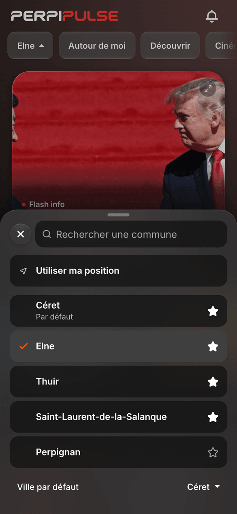

La hauteur, au format d'un grand iPhone, 440 px
Toucher la recherche ne l'agrandit plus. Une longue recherche la fait monter, sous son plafond. Seul le clavier occupe toute la zone au-dessus de lui.
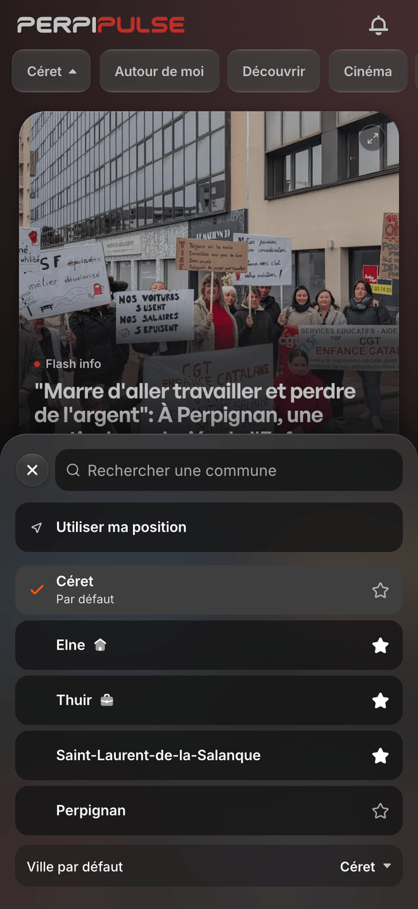
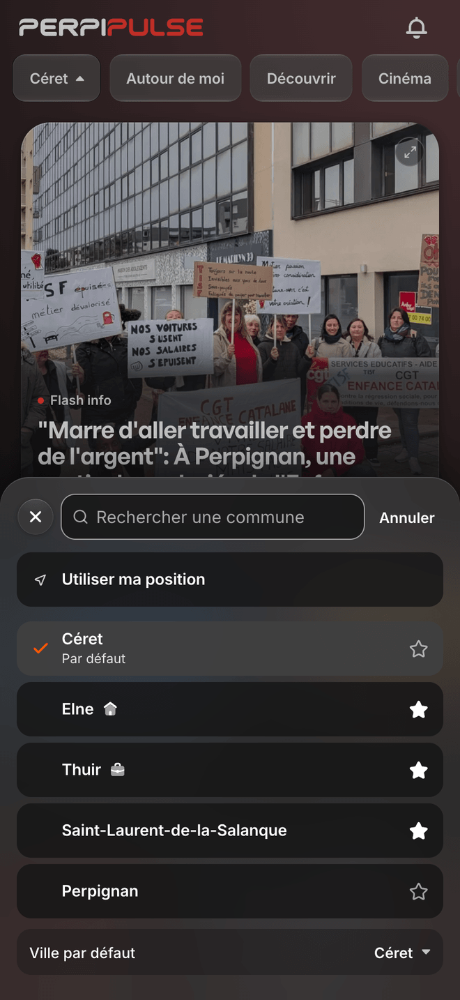
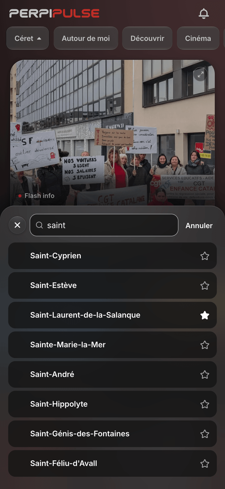
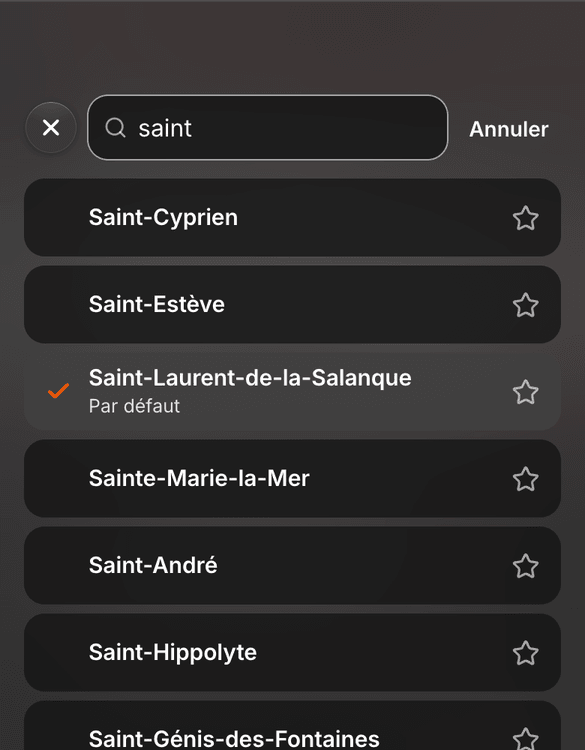
Domicile et Travail
Deux dessins originaux, de la même famille, à côté de la maison d'Accueil pour comparer. L'étoile déplie les étiquettes sous la ligne.


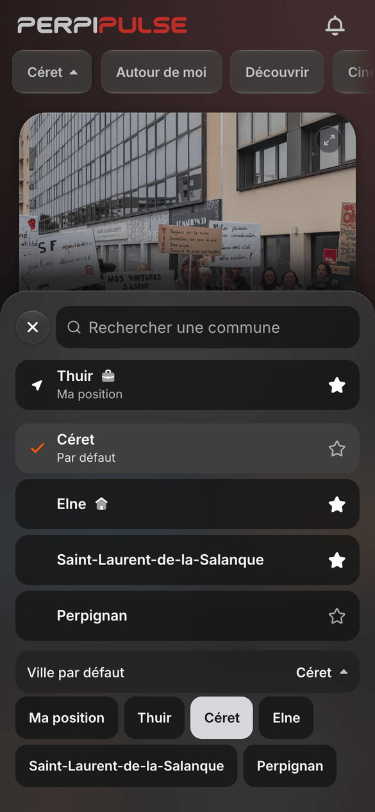
GPS et favoris, sans doublon
Thuir s'écrivait deux fois. La ligne de la position porte maintenant son étoile et ses repères.
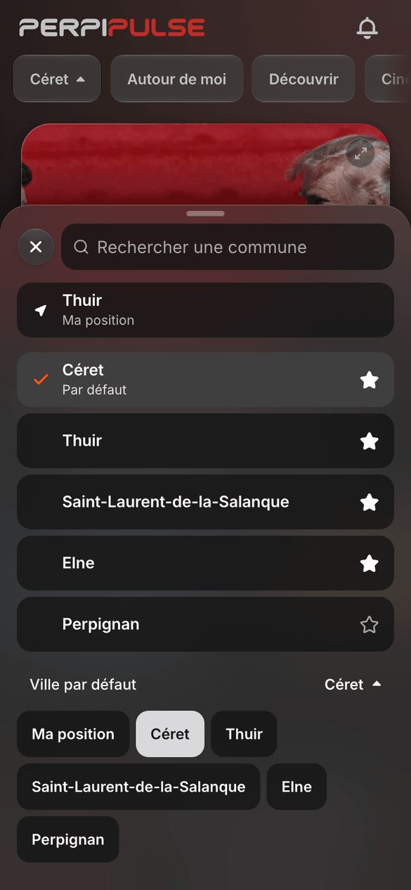
Les autres formats et états
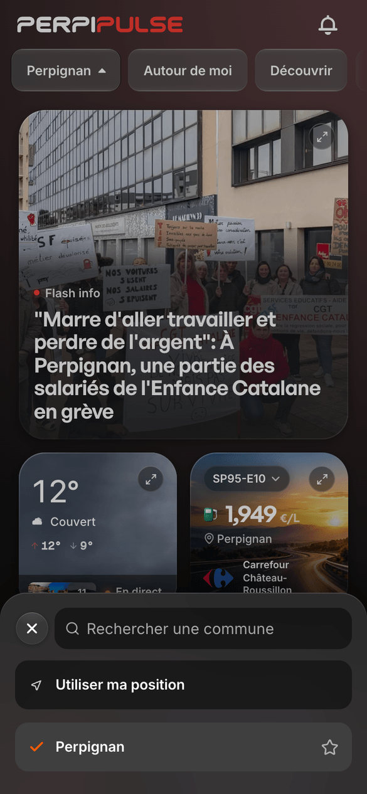
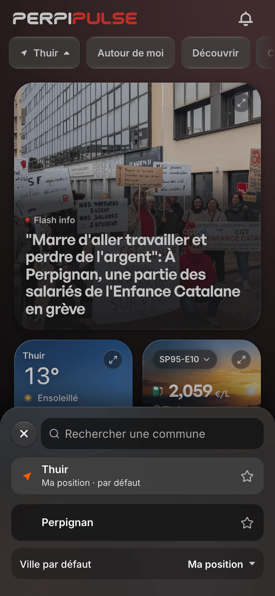
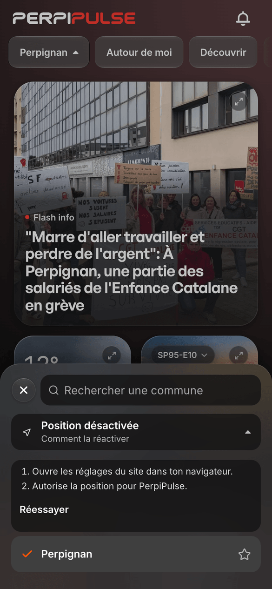
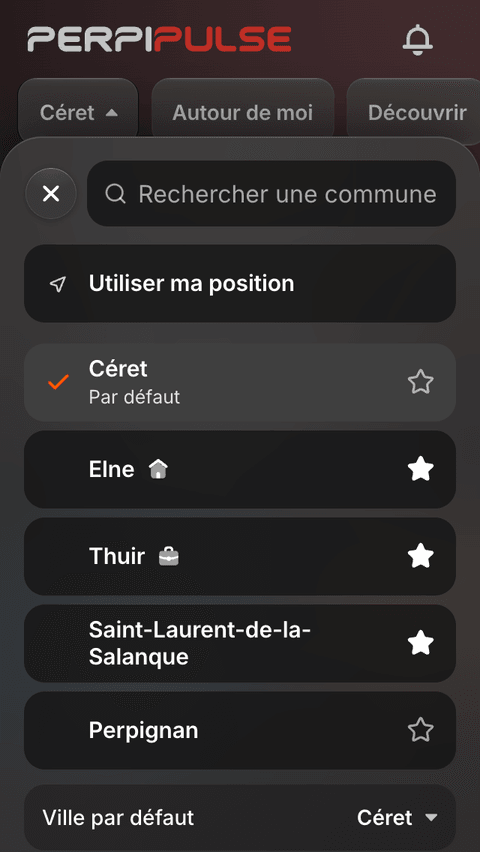
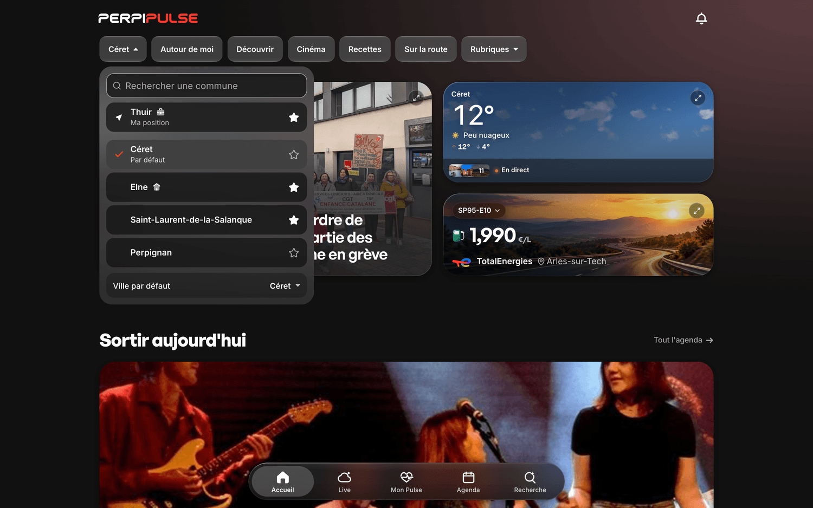